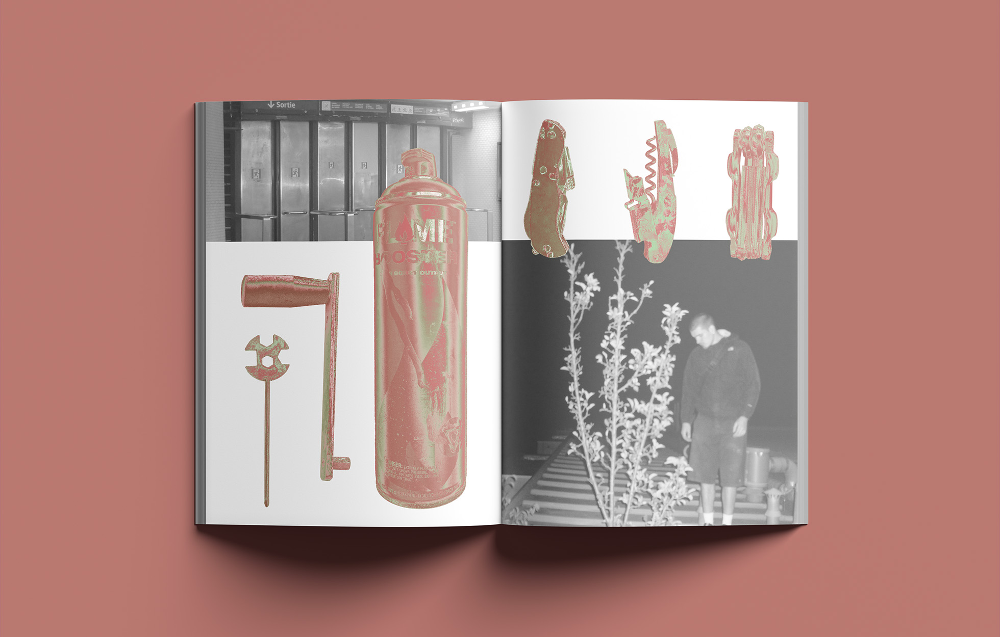
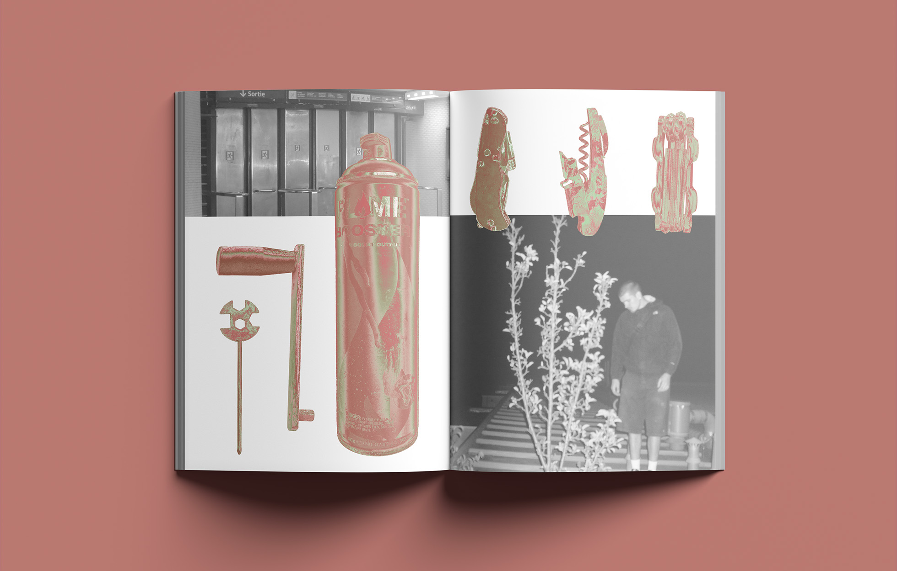

CRÉATION ÉDITORIALE — CRÉATION ÉDITORIALE —
CRÉATION ÉDITORIALE — CRÉATION ÉDITORIALE —
INK MADNESS peut se traduire par la « Folie de l’encre », ce serait l’équivalent d’un état de flow dans lequel peut rentrer un artiste en plein acte de création, or ici ce « flow » du graffeur est accompagné d’un véritable brouillard psychologique, la notion de temps et de localité s’est perdue dans les effluves d’acide, de pigments et de bière. L’INK MADNESS prend tout, peindre devient un besoin irrépressible ; les bombes se vident, les vêtements se tachent, les poumons s’irritent. La conscience altérée, l’artiste ne peut résister à l’envie de céder au vendalisme, le forçant souvent à parcourir des distances invraisemblables pour atteindre des endroits inappropriés.
Les peintures se transforment en indices éparpillés dans la ville, comme des capsules temporelles, elles jouent un rôle de sauvegarde des souvenirs de l’artiste, qui, étant entièrement pris par cet état de flow continu, ne peut que déposer ses mémoires pour ensuite les réanimer une fois cette INK MADNESS évanouie.
Cette édition imagée autour du thème du graffiti regroupe un ensemble d’objets et de lieux liés à la pratique. Les objets sont unifiés par leur couleurs, tandis que les lieux représentés sont souvent utilisés comme supports pour situer le contexte de l’utilisation de ces objets.

 
